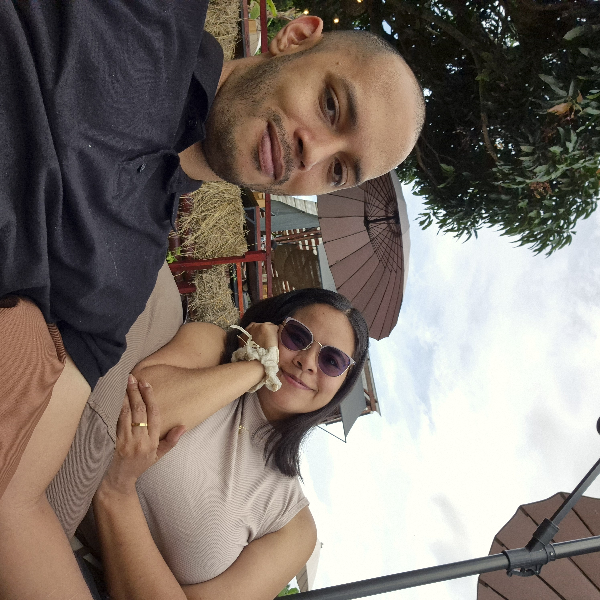
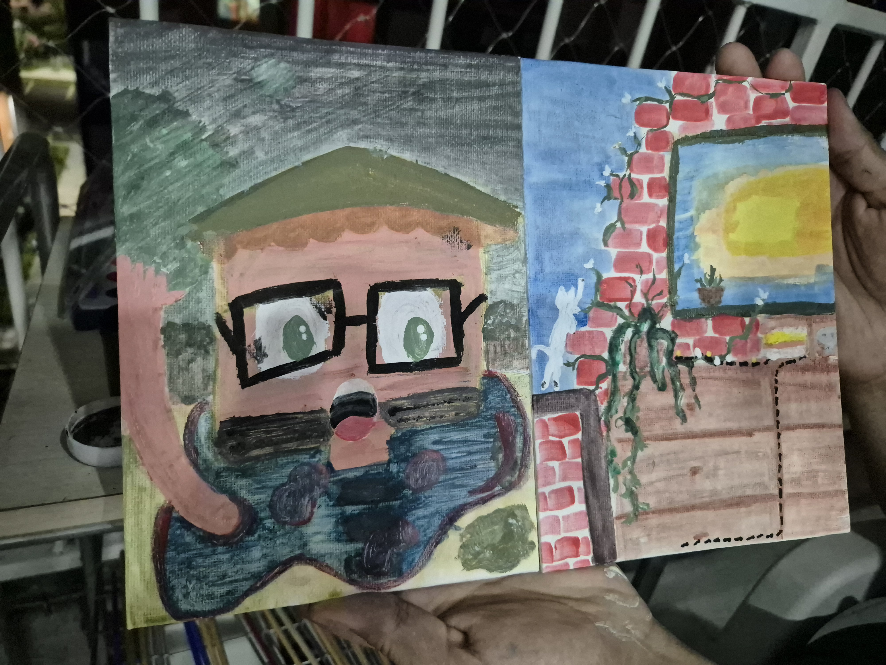
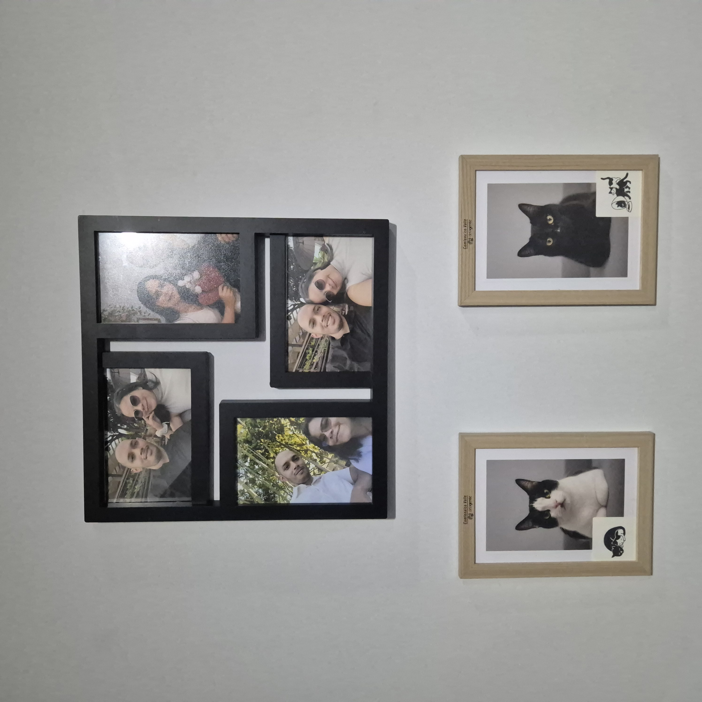

Cada mes
contigo
Desde el 4 de noviembre de 2025,
cada mes es me recuerda que es mi felicidad quererte.
Desliza para ver nuestra historia
Ecoparque Tángara. Un bonito fin de semana juntos.🍂
Un alumbrado feito, pero tú eras y eres la lucecita que necesitaba.

La fugitiva. El lugar fue un desacierto, pero estar contigo es todo lo que necesito. El mejor inicio de año igualmente.
Empezamos nuestro hogar
Cuatro meses y ya no recuerdo cómo era esto sin ti.

No fue el mejor arte, pero era evidencia de que nos complementamos

La mitad del camino al primer año. Y me encata saber que ha valido.
Séptimo
mesiversario
4 de junio · 2026 · Jueves
Falta para nuestro día
Ya viene el día. Tengo todo planeado para que sea especial.
Se abre cuando sea el momento
El
desayuno
Falta para tu primera sorpresa
¡Hora del desayuno especial!
Antes de salir al trabajo, hay algo especial esperándote. Revisa la cocina (o tu bolso). ☀️🥐
Se abre cuando sea el momento
Un mensaje
para ti
Falta para la sorpresa de la mañana
¡Pausa de 10 minuticos!
Sé que el trabajo está pesado. Pero quería que supieras que estoy pensando en ti. Revisa tus mensajes. 💌
Se abre cuando sea el momento
El
almuerzo
Falta para la sorpresa del mediodía
¡Hora de almorzar juntos!
Hoy el almuerzo es diferente. Te espero en [lugar] o revisa lo que te dejé. 🍱💛
Se abre cuando sea el momento
La tarde
es nuestra
Falta para nuestra cita
¡Empieza nuestra tarde!
Ya terminó el trabajo. Ahora empieza lo bueno. Nos vemos en [lugar], vístete cómoda. 🌆🌸
Se abre al final del día
Ocho meses
increíbles
Gracias por este día y por todos los anteriores. Cada mes contigo es mejor que el anterior.
Y apenas faltan cuatro meses más para el primer año. Vamos a hacerlos todos especiales.
— Con todo mi amor 💛
Siguiente mesiversario
4 de julio · 2026 · ¡Sábado! 🎉